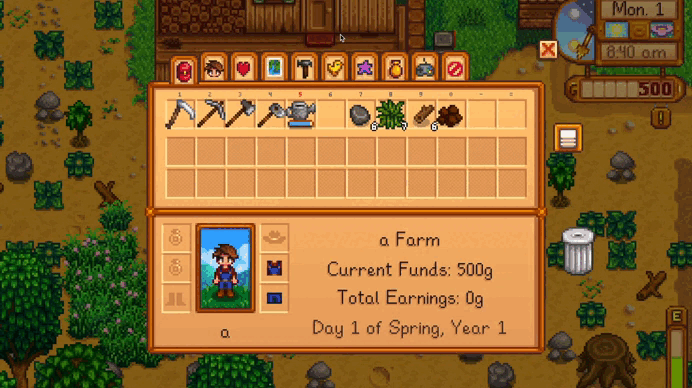
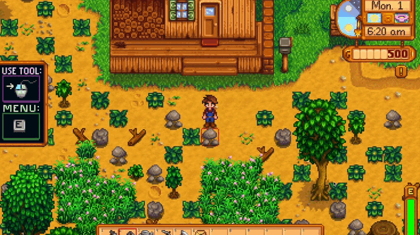
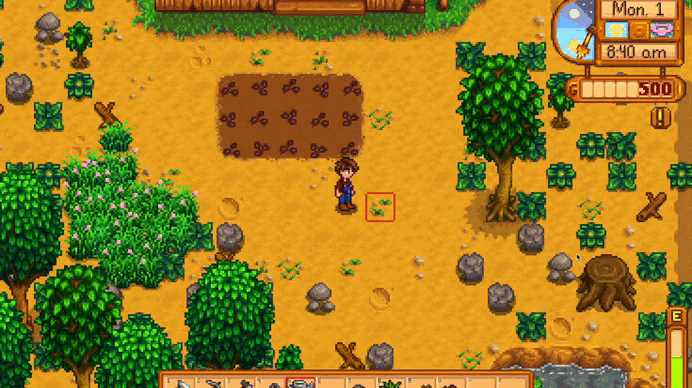

Introduction
Stardew Valley may be difficult to navigate at first. This page is for dearies with no previous experience in playing the game. On this page, Granny will help you with the controls, starting the game, and getting things going.
Controls
On PC, Stardew Valley uses the W, A, S, and D keys to control the movements of the player.
Left-clicking on the mouse allows the player to use a tool or place an item, depending on what is currently being held. For example, if the player is holding a watering can, left-clicking will prompt the character to water the ground. If the player is holding a chair, left-clicking will place the chair on the ground. Right-clicking on the mouse allows the player to check or "do" an action, meaning that right-clicking on a TV will prompt the user with channels to play and right-clicking while holding food will have the character eat the food.

The E key opens up the menu, which begins on the inventory page, where the user can click through tabs containing the owned animals tab, social tab, skills tab, crafting tab, collections tab, and settings tab.
You can press Left-Shift while controlling movements to run, or go to the settings and change the default to running, which would make the Left-Shift key a "walk" button.
Moving the scroll wheel will allow you to switch between items currently on your toolbar. Alternatively, you can press from 1 and past the 0 key to the - and = key to choose your current tool. To switch between toolbars (rows of your inventory), you can press the Shift key.
The F key will open up your journal, which will have all of your ongoing quests.

You can easily open up the Map window with the M key.
Day 1 Walkthrough
Let's walk through the first day in the game. Tired of your corporate job, you remember the gift your late grandfather had left with you. He had said to open it when you are tired of your current life, so you do so in your cubicle. Enclosed in the letter is the deed to his old farm, and you decide to start a new life there.
When you arrive at the valley, the local carpenter will greet you at the bus stop. She shows you the messy farm you were left with. The game officially begins here, where you wake up in your new bed on the first day of Spring.
In the room, there will be a package to open using right-click, where the mayor left you with 15 parsnip seeds.


When you leave the little shed you are to sleep in from now on, you will have to use the tools in your possession to get rid of some of the debris on the farm. You need to use the axe for getting rid of trees and wood and the pickaxe to get rid of rocks. The grass can be removed using any tool, but the scythe is the easiest as multiple blocks of grass can be removed at one swipe.

Once you have enough space for your parsnips, you should be able to use the hoe and left-click on empty ground to till the soil. Till 15 tiles of soil, in whatever formation you desire, and plant your seeds.
Save for days with rain, you will have to water these seeds every day until they fully grow. Parsnips in the Stardew Valley game take 4 days to grow. Remember to water all seeds because unwatered crops will dry up and die the next day.

When you press F at any point during this time, you will see two quests to complete - one will be to harvest a parsnip and the other will be to greet the other people in town.
During days where you have to wait for your crops to grow, you can go to town and explore your new environment. You will be able to talk to the townspeople by right-clicking on them once you are nearby.